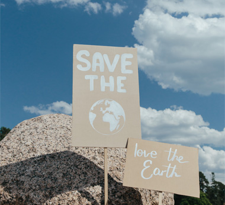

본문콘텐츠영역
사업소개
ESG 경영

ESG 전략
kt is는 고객과 임직원, 지역사회와 주주에게 다양한 가치를 제공하고 지속적으로 만족시켜 신뢰를 얻으며 궁극적으로 사회와 더불어 나아갑니다.
자세히보기 arrow_forwardESG 활동
kt is는 지구 환경 개선에 기여하고 ‘Net Zero 2050’ 달성을 위해 환경경영의 대상, 범위, 특성 등을 복합적으로 고려하여..
자세히보기 arrow_forward